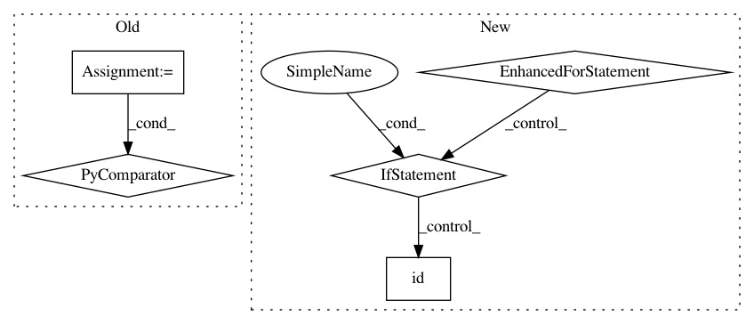

249c21346208b682d128e28fe4480262f8b76cd8,torch/distributed/optim/zero_redundancy_optimizer.py,ZeroRedundancyOptimizer,state_dict,#ZeroRedundancyOptimizer#,393
Before Change
start = end
return {
"state": [s["state"] for s in self._all_states],
"param_groups": param_groups,
"partition": partition,
"local_state_dict": False,
After Change
// - go through the per-shard states, which are all indexed locally
for rank, s in enumerate(self._all_states):
// -- match the local indexing and the global partition, update the corresponding saved state globally
for local_pg, global_pg in zip(
s["param_groups"], self.partition_parameters()[rank]
):
local_index_to_param_id = {
i_param: id(global_pg["params"][i])
for i, i_param in enumerate(local_pg["params"])
}
for local_param_index in local_pg["params"]:
// Update the state, if any
if local_param_index in s["state"].keys():
global_id = self._param_to_index[
local_index_to_param_id[local_param_index]
]
state_dict["state"][global_id] = s["state"][local_param_index]
// Make sure that the parameters are sorted in the state, as expected
state_dict["state"] = dict(sorted(state_dict["state"].items()))
return state_dict
@staticmethod
In pattern: SUPERPATTERN
Frequency: 3
Non-data size: 5
Instances
Project Name: pytorch/pytorch
Commit Name: 249c21346208b682d128e28fe4480262f8b76cd8
Time: 2021-02-27
Author: benjamin.lefaudeux@gmail.com
File Name: torch/distributed/optim/zero_redundancy_optimizer.py
Class Name: ZeroRedundancyOptimizer
Method Name: state_dict
Project Name: keras-team/keras
Commit Name: 555ca942df407b8c1bf1d48383c60fa1bf09cc1d
Time: 2019-08-28
Author: francois.chollet@gmail.com
File Name: keras/utils/layer_utils.py
Class Name:
Method Name: count_params
Project Name: keras-team/keras
Commit Name: 555ca942df407b8c1bf1d48383c60fa1bf09cc1d
Time: 2019-08-28
Author: francois.chollet@gmail.com
File Name: keras/engine/network.py
Class Name: Network
Method Name: losses